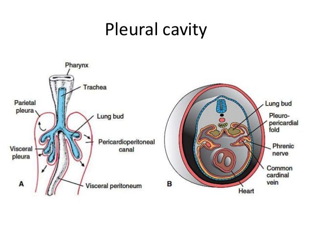
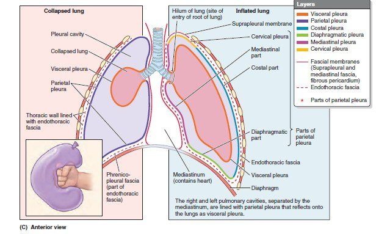
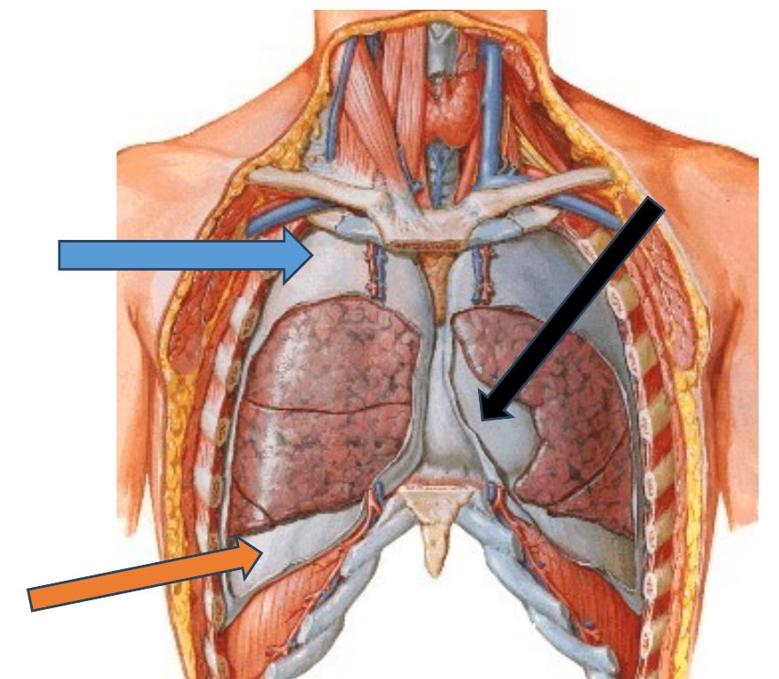
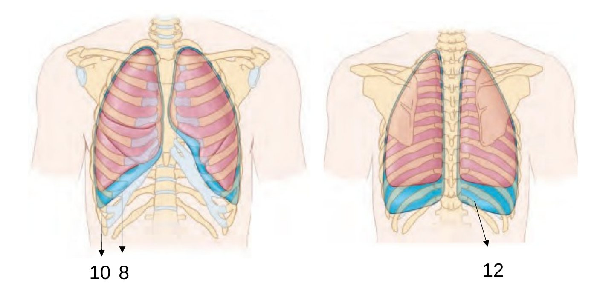
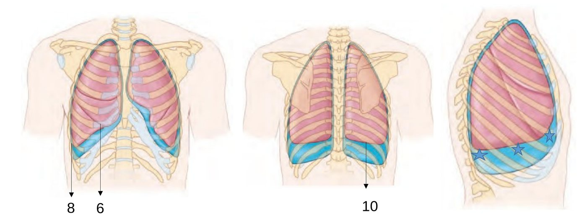

Akciğer göğüs duvarına yapışık değildir, ama ondan ayrılamaz da. Bu çelişkiyi plevra çözer: akciğeri saran ve göğüs boşluğunu döşeyen iki ince seröz yaprak ve aralarındaki birkaç mililitrelik sıvı. Bu bölüm plevranın nasıl oluştuğunu, hangi bölümlerden meydana geldiğini, sınırlarının göğüs duvarına nasıl yansıdığını ve bu dengeye hava ya da sıvı girdiğinde ne olduğunu anlatır.
4.1. Göğüs boşluğunun bölmeleri
Sunumun ifadesiyle cavitas thoracis üç kompartımandan oluşur:
İki lateral kompartıman (pulmoner boşluklar): her biri bir akciğeri ve onu saran plevrayı içerir.
Bir santral kompartıman (mediastinum): kalp, büyük damarlar, trakeanın göğüsteki kısmı, özofagus, timus, sinirler ve lenf yapıları burada bulunur (Bölüm 7).
Göğüs duvarının iç yüzünü ince, gevşek bir bağ dokusu katmanı döşer: fascia endothoracica (sunumdaki diğer adıyla fascia parietalis thoracis). Bu fasya kostal parietal plevrayı göğüs duvarına bağlar ve cerrahlara bir ayrışma düzlemi sağlar: plevrayı açmadan göğüs duvarına ya da omurgaya bu düzlemden ulaşılabilir (ekstraplevral yaklaşım). Fasya yukarıda kalınlaşarak membrana suprapleuralis'i (Sibson fasyası) oluşturur. Bu zar C7'nin transvers çıkıntısından 1. kaburganın iç kenarına uzanır ve cupula pleurae'nin üstünü bir çatı gibi örter. Görevi, akciğer tepesinin öksürük ve ıkınma sırasında boyuna doğru balonlaşmasını ve solunumdaki basınç değişikliklerinde boyun kökünün içe çekilmesini önlemektir.
Göğüs boşluğu dışarıdan bakıldığında sanıldığından küçüktür. Diyafram kubbeleri ekspirasyonda 5. kaburga düzeyine yükseldiği için göğüs kafesinin alt kısmının içinde karın organları bulunur. 7. İKA'dan giren bir bıçak plevrayı, diyaframı ve karaciğeri birlikte yaralayabilir.
4.2. Plevranın gelişimi ve yumruk-balon benzetmesi
Sunum plevrayı embriyolojisiyle açar, çünkü plevranın bütün düzeni bu gelişimden anlaşılır (Şekil 4.1):
4. haftada embriyonun vücut boşluğu (intraembriyonik sölom) perikard boşluğu, karın boşluğu ve ikisini birleştiren iki dar tünelden oluşur. Bu tüneller perikardioperitoneal kanallardır ve plevra boşluklarının başlangıcıdır.
Ön bağırsaktan çıkan akciğer tomurcukları iki yana doğru bu kanalların içine büyür.
Sölomik epitel büyüyen akciğerin üzerini örter. Sunumun deyişiyle bu örtü, "yumruğu saran balon gibi" visseral plevrayı oluşturur.
Perikardioperitoneal kanalların duvarını örten epitel de parietal plevrayı oluşturur.
Kanallar perikard boşluğundan pleuroperikardiyal kıvrımlarla, karın boşluğundan pleuroperitoneal membranlarla ayrılır. Pleuroperikardiyal kıvrımlar içlerinde n. phrenicus'u ve ana kardinal venleri taşır. Fibröz perikard bu kıvrımlardan gelişir. N. phrenicus'un erişkinde perikard ile mediastinal plevra arasında seyretmesinin nedeni budur (Bölüm 2.6).

Şekil 4.1 — Plevranın gelişimi. (A) Akciğer tomurcuğu (lung bud) perikardioperitoneal kanalın içine büyür; üzerini örten tabaka visseral plevra, kanalın duvarını örten tabaka parietal plevra olur. (B) Enine kesit: pleuroperikardiyal kıvrım (içinde phrenic nerve ve common cardinal vein) plevra boşluğunu kalbin bulunduğu perikard boşluğundan ayırır. Slayt 48
Yumruk-balon benzetmesi. Hafifçe şişirilmiş bir balona yumruğunuzu bastırdığınızı düşünün (Şekil 4.2'nin sol alt köşesi). Yumruğunuz balonun içine girmez, balonun duvarını önünüzden iterek içine gömülür. Yumruğunuza değen balon katmanı visseral plevradır, dıştaki katman parietal plevradır, iki katman arasındaki ince hava (gerçekte sıvı) tabakası plevral boşluktur, bileğiniz ise akciğer köküdür. Bu benzetme dört gerçeği birden açıklar:
İki yaprak aslında tek ve kesintisiz bir zarın iki parçasıdır; hilusta (bilekte) birbirine devam eder.
Plevral boşluk gerçek bir boşluk değil, potansiyel bir boşluktur: normalde iki yaprak birbirine değer ve arada yalnızca ince bir sıvı tabakası vardır.
Akciğer plevral boşluğun içinde değil, dışındadır. Yumruk balonun içinde olmadığı gibi, akciğer de visseral plevrayla örtülü olarak boşluğun "önündedir".
Bilek çevresindeki katlantı, akciğer kökünün etrafında bir manşon oluşturur. Bu manşon kökün altında gevşek bir çift katlı kıvrım olarak aşağı sarkar: lig. pulmonale. Bu kıvrım, solunumda aşağı-yukarı hareket eden kök yapılarına (özellikle genişleyip daralan pulmoner venlere) hareket alanı bırakır.
4.3. Visseral ve parietal plevra
Sunumun tanımıyla akciğerin üzerini birbirinin devamı olan, seröz, iki katlı plevra zarı örter:
Visseral plevra (pleura visceralis, pulmonalis): akciğerin dış yüzeyini sarar ve fissürlerin içine girerek lobların karşılıklı yüzlerini de örter. Parlaktır ve akciğerden ayrılamaz.
Parietal plevra (pleura parietalis): göğüs kafesinin iç yüzüne, mediastinuma ve diyaframa yapışır. Mattır. Pulmoner boşluğu döşer.
Bu iki tabaka arasındaki aralığa cavitas pleuralis denir. Potansiyel bir boşluktur ve burada plevra sıvısı bulunur. Akciğer hilusunda visseral plevra parietal plevra olarak devam eder.

Şekil 4.2 — Plevranın katmanları, koronal şema. Solda çökmüş akciğer (collapsed lung) ve sol altta yumruk-balon benzetmesi; sağda şişmiş akciğer (inflated lung). Renkli çizgiler: visseral plevra (turuncu), parietal plevranın bölümleri (kostal mavi, diyafragmatik yeşil, mediastinal mor, servikal sarı); kesik çizgi fascia endothoracica; en üstte suprapleural membrane. Akciğer kökünde (hilum) iki yaprak birbirine devam eder. Slayt 49, 51 · Moore
Parietal plevranın bölümleri. Parietal plevra döşediği yüzeye göre dört bölüme ayrılır (Şekil 4.3):
Pars costalis: göğüs duvarının iç yüzünü (kaburgaların, kıkırdakların, interkostal kasların, sternumun ve vertebraların yanlarının iç yüzünü) örter. Duvardan fascia endothoracica ile ayrılır. En geniş bölümdür.
Pars mediastinalis: mediastinumun yan yüzlerini örter. Akciğer kökünde (radix pulmonis) visseral plevraya devam eder ve kökün altında lig. pulmonale'yi oluşturur.
Pars diaphragmatica: diyaframın üst (torasik) yüzünü örter; perikardın diyaframa kaynaştığı orta bölge hariç. Diyaframa ince bir fasya (fascia phrenicopleuralis) ile bağlanır.
Cupula pleurae (pleura cervicalis): apertura thoracis superior'dan boyun köküne uzanır ve akciğerin tepesini (apex pulmonis) örter. Klavikulanın iç üçte birinin 2-3 cm üstüne kadar yükselir. Fascia endothoracica'nın uzantısı olan membrana suprapleuralis ile örtülüdür.

Şekil 4.3 — Ön göğüs duvarı kaldırılmış: akciğerler yerinde. Sunumdaki oklar parietal plevranın bölümlerini gösterir: mavi ok üstte cupula pleurae'nin bulunduğu akciğer tepesini, siyah ok mediastinumu örten pars mediastinalis'i, turuncu ok diyaframı örten pars diaphragmatica'yı. Kesilmiş kenarlarda pars costalis görülür. Slayt 50 · Netter
Cupula'nın tehlikeli komşulukları. Cupula pleurae'nin boyun köküne taşması, birçok boyun girişiminin plevrayı delme riskini açıklar. V. subclavia'ya ya da v. jugularis interna'ya kateter takılırken, supraklaviküler plexus brachialis bloğunda, boyun kökünden ve klavikula üstünden giren bıçak yaralanmalarında iğne ya da bıçak cupula'yı delip pnömotoraksa yol açabilir. Cupula'nın hemen üstünde ve önünde a. ve v. subclavia, arkasında plexus brachialis'in alt gövdesi (C8-T1) ve 1. torakal sinir, medialinde sempatik gövdenin stellat gangliyonu bulunur. Akciğer tepesinde gelişen bir tümör (Pancoast tümörü) cupula'yı aşarak bu yapıları tutabilir: omuz ve kolun iç yüzüne yayılan ağrı, el kaslarında güçsüzlük (C8-T1) ve stellat gangliyonun tutulmasıyla Horner sendromu (aynı tarafta ptozis, miyozis, yüzde terleme kaybı) görülür.
Tablo 4.1 iki yaprağı karşılaştırır. Damar ve sinirlerinin ayrıntısı Bölüm 6'dadır, ama karşılaştırma burada da yararlıdır: iki yaprağın embriyolojik kökeni farklı olduğu için damarları, lenfatikleri ve sinirleri de farklı sistemlere aittir. Visseral yaprak akciğerin bir parçası gibi, parietal yaprak göğüs duvarının bir parçası gibi davranır.
Visseral plevra
Parietal plevra
Görünüm
Parlak, akciğerden ayrılamaz; fissürlerin içine girer
Mat; fascia endothoracica ile duvardan ayrılabilir
Göğüs duvarı düğümleri (interkostal, parasternal, mediastinal, frenik); servikal plevranın bir kısmı aksiller düğümlere
Siniri ve ağrı
Otonom (pulmoner pleksus); dokunma ve kesmeye duyarsız, ağrı lokalize edilemez
Somatik: kostal kısım ve diyafram çevresi interkostal sinirler, diyafram merkezi ve mediastinal kısım n. phrenicus; keskin, yeri belirli ağrı
Tablo 4.1 — Visseral ve parietal plevranın karşılaştırılması.
4.4. Plevral boşluk: sıvı, basınç ve akciğeri duvara bağlayan kuvvet
Plevral sıvı. Sağlıklı bir erişkinde her plevral boşlukta yalnızca 10-20 mL kadar (yaklaşık 0,1-0,3 mL/kg) ince, berrak bir sıvı vardır. Sıvı iki yaprak arasında birkaç mikrometre kalınlığında bir film oluşturur. Bu film iki işe yarar: yaprakların solunum sırasında birbiri üzerinde sürtünmeden kaymasını sağlar ve yüzey gerilimiyle iki yaprağı birbirine bağlar.
Akciğer neden göğüs duvarını izler? Akciğerin elastik dokusu onu sürekli küçülmeye zorlar (elastik geri çekim). Göğüs duvarı ise dinlenim konumunda dışa doğru açılmaya eğilimlidir. Bu iki zıt kuvvet aralarındaki ince sıvı filmini iki yandan çeker ve plevral boşluktaki basıncı atmosfer basıncının altına indirir: sessiz bir ekspirasyonun sonunda yaklaşık −5 cmH₂O. İki ıslak cam levhayı düşünün: birbirinin üzerinde kolayca kayarlar, ama dik açıyla ayırmaya çalıştığınızda zorlanırsınız. Plevral yapraklar da öyledir. Göğüs duvarı genişlediğinde akciğer onu izlemek zorunda kalır, çünkü aradaki sıvı filmi iki yaprağın ayrılmasına izin vermez. İnspirasyonda plevral basınç yaklaşık −8 cmH₂O'ya iner.
Plevral basınç her yerde aynı değildir. Ayakta duran bir insanda akciğerin ağırlığı nedeniyle tepede daha negatif (yaklaşık −10 cmH₂O), tabanda daha az negatiftir (yaklaşık −2,5 cmH₂O). Bu yüzden akciğer tepesindeki alveoller dinlenimde daha fazla gerilmiş, büyük alveollerdir. Gerilmeye en çok maruz kalan bu bölge, uzun boylu ince gençlerde subplevral hava keseciklerinin (bleb) geliştiği ve yırtılarak spontan pnömotoraksa yol açtığı yerdir (4.7).
Sıvının yapımı ve emilimi. Plevral sıvı sürekli yapılır ve sürekli emilir. Yapımın asıl kaynağı parietal plevranın sistemik kapillerleridir: bu kapillerlerdeki yüksek hidrostatik basınç, sıvıyı az miktarda proteinle birlikte plevral boşluğa süzer (Starling kuvvetleri). Emilimin asıl yolu ise parietal plevradaki lenfatik ağızlardır (stomata), özellikle diyafram ve mediastinal plevranın alt, bağımlı kısımlarında. Lenfatikler normal yapım hızının yaklaşık 20 katını emebilecek kapasitededir. Bu büyük güvenlik payı nedeniyle sıvı ancak yapım çok arttığında ya da lenfatik emilim bozulduğunda birikir: plevral efüzyon. Efüzyonun mekanizması onun türünü belirler:
Transüda: zar sağlamdır, yalnızca basınç dengesi bozulmuştur. Kapiller hidrostatik basınç artar (kalp yetersizliği, en sık neden) ya da plazma onkotik basıncı düşer (siroz, nefrotik sendrom, hipoalbüminemi). Sıvı az protein içerir.
Eksüda: zarın geçirgenliği artmıştır ya da lenfatik drenaj tıkanmıştır. Enfeksiyon (parapnömonik efüzyon, tüberküloz), kanser (plevral metastaz, mezotelyoma), pulmoner emboli bu gruptadır. Sıvı protein ve LDH'den zengindir. Light ölçütlerine göre plevral sıvı/serum protein oranı 0,5'in, LDH oranı 0,6'nın üstündeyse ya da plevral LDH serum üst sınırının üçte ikisini aşıyorsa sıvı eksüdadır.
4.5. Plevral refleksiyon hatları ve resesler
Refleksiyon hatları, parietal plevranın bir yüzeyden diğerine geçerken yön değiştirdiği katlantı hatlarıdır. Sunum dört hat sayar ve her hattın içinde oluşan resesi verir:
Refleksiyon hattı
Hangi bölümler arasında
Biçimi
İçinde oluşan reses
Sternal hat
Pars costalis → pars mediastinalis (önde, sternumun arkasında)
Keskin
Recessus costomediastinalis
Kostal hat
Pars costalis → pars diaphragmatica (aşağıda)
Keskin
Recessus costodiaphragmaticus
Vertebral hat
Pars costalis → pars mediastinalis (arkada, omurganın yanında)
Yuvarlak
Recessus vertebromediastinalis
Diyafragmatik hat
Pars diaphragmatica → pars mediastinalis
Keskin
Recessus phrenicomediastinalis
Tablo 4.2 — Plevral refleksiyon hatları ve resesler (slayt 52-53).
Resesler (recessus pleurales), iki parietal plevra yaprağının, aralarına akciğer girmeden birbirine değdiği, plevral boşluğun yarık biçimli uzantılarıdır. Sessiz solunumda akciğer bu yarıkların içine girmez. Derin inspirasyonda akciğerin kenarları resesin içine doğru kayar ve resesi kısmen doldurur. Sunumun uyarısı burada önemlidir: "3 boyutlu düşünün!!!" Bir reses kesitlerde bir köşe gibi görünür, ama gerçekte refleksiyon hattı boyunca uzanan bir oluktur. Örneğin kostodiyafragmatik reses, diyafram kubbesinin çevresini önden arkaya dolanan yarım halka biçimli bir oluktur ve en derin olduğu yer arka-yan kısımdır (Şekil 4.4).
Şekil 4.4 — Plevral resesler. (A) Koronal kesitte parietal plevra (koyu mavi çizgi) duvardan diyaframa keskin bir açıyla döner; akciğerin alt kenarı bu açıya girmez ve aradaki yarık recessus costodiaphragmaticus'tur. Diyafram ile mediastinum arasındaki köşe recessus phrenicomediastinalis'tir. Hilusta iki yaprak birbirine devam eder ve kökün altında lig. pulmonale'yi oluşturur. (B) Enine kesitte önde, sternumun arkasında kostal ve mediastinal plevra arasındaki recessus costomediastinalis (solda kalbin itmesiyle daha geniş) ve arkada omurganın yanındaki yuvarlak recessus vertebromediastinalis.
Recessus costodiaphragmaticus: en büyük ve en derin resestir. Kostal ve diyafragmatik plevra arasındadır. Sessiz solunumda akciğerin alt kenarının yaklaşık iki kaburga altına kadar uzanır (4.6). Ayakta duran bir insanda plevral boşluğun en alt noktasıdır. Yerçekimiyle sıvı önce buraya, özellikle en derin olan arka kısmına birikir. Bu yüzden torasentez iğnesi bu resese yöneltilir (Bölüm 3.5).
Recessus costomediastinalis: önde, sternum ve kaburga kıkırdaklarının arkasında, kostal ve mediastinal plevra arasındadır. Solda daha geniştir, çünkü sol akciğerin ön kenarı kalbin itmesiyle 4. kıkırdak düzeyinde yana çekilir (incisura cardiaca). Derin inspirasyonda akciğerlerin ön kenarları bu reseslere kayar.
Recessus phrenicomediastinalis: diyafragmatik ve mediastinal plevra arasındaki küçük resestir.
Recessus vertebromediastinalis: arkada, omurganın yanında kostal ve mediastinal plevra arasındadır. Refleksiyon hattı yuvarlak olduğu için sığdır.
SUNUMDA VURGULANAN
"Klinikte RCD için sinüs denir!!!" ve "Klinikte recessus costodiaphragmaticus içinde sıvı varsa 'sinüsler kapalı', yoksa 'sinüsler açık' olarak denir!!!" Göğüs grafisinde diyafram ile göğüs duvarının yaptığı açı (kostofrenik açı) normalde keskindir: "sinüsler açık". Resese sıvı birikince açı yuvarlaklaşır ve silinir: "sinüsler kapalı" (Şekil 4.5).
Şekil 4.5 — Arka-ön (PA) göğüs grafisi. Kırmızı daire sağ kostofrenik açıyı (recessus costodiaphragmaticus'un grafideki karşılığı, klinikteki adıyla "sinüs") gösterir. Burada açı keskindir: sinüs açık. Slayt 54
Sıvının grafide görünür olması için belirli bir miktara ulaşması gerekir (Şekil 4.6). Ayakta çekilen yan grafide arka kostofrenik açı ilk silinen yerdir, çünkü reses arkada en derindir. Arka-ön (PA) grafide yan kostofrenik açının künt görünmesi için yaklaşık 200 mL sıvı gerekir. Hastanın yan yatarak çekilen grafisi (lateral dekübit) ve ultrasonografi çok daha az sıvıyı gösterebilir. Fizik muayenede perküsyonda matite ancak birkaç yüz mililitreden sonra belirginleşir.
Şekil 4.6 — Plevral sıvının saptanabildiği yaklaşık en küçük miktarlar. Değerler kaynaklar arasında değişir: lateral grafide 50-75 mL, PA grafide 175-250 mL, fizik muayenede 300-500 mL. Ultrasonografi ve lateral dekübit grafi daha küçük miktarları (birkaç on mililitreden az) gösterebilir. Kaynak: Light, Pleural Diseases.
4.6. Plevra ve akciğer sınırlarının yüzeye yansıması
Plevranın ve akciğerin sınırlarının göğüs duvarındaki karşılıkları, muayenenin ve her göğüs girişiminin temelidir. Sunum alt sınırları iki sayı dizisiyle verir:
SUNUMDA VURGULANAN
Plevranın alt kenarı (margo inferior): 8-10-12. Linea medioclavicularis hizasında 8. kaburgayı, linea axillaris media hizasında 10. kaburgayı, omurganın yan kenarında 12. kaburgayı çaprazlar. Akciğerin alt kenarı (yarı inspirasyonda): 6-8-10. Aynı üç çizgide sırasıyla 6., 8. ve 10. kaburgaları çaprazlar.


Şekil 4.7 — Üstte plevranın, altta akciğerin projeksiyonu; önden, arkadan ve yandan. Mavi çizgili alanlar plevra ile akciğer kenarı arasındaki farkı, yani kostodiyafragmatik resesi gösterir. Sunumdaki sayılar: plevra için önde 8, yanda 10, arkada 12; akciğer için önde 6, yanda 8, arkada 10. Slayt 55-56
İki dizinin arasındaki fark her çizgide iki kaburgadır (Şekil 4.8). Bu iki kaburgalık bant, sessiz solunumda akciğerin girmediği recessus costodiaphragmaticus'un yüzeydeki karşılığıdır. Sayıları ezberlemenin en kolay yolu, akciğer dizisini (6-8-10) öğrenip plevra dizisini ona iki ekleyerek bulmaktır. Bandın iki pratik sonucu vardır: (1) Orta aksiller çizgide 9. aralıktan girilen bir iğne akciğere değmeden resese, yani sıvının biriktiği yere ulaşır (Şekil 3.10). (2) Derin inspirasyonda akciğerin alt kenarı bu bant içinde yaklaşık iki kaburga aşağı kayar. Muayenede derin nefesle akciğer sınırının aşağı inmesi (diyafram hareketi) perküsyonla gösterilebilir. Normal hareket 3-5 cm kadardır ve hiperinflasyonda, diyafram felcinde ya da efüzyonda azalır.
Şekil 4.8 — Akciğerin ve plevranın alt sınırları üç yüzey çizgisinde. Her çizgide plevra akciğerden iki kaburga aşağıdadır; aradaki bant recessus costodiaphragmaticus'tur.
Diğer sınırlar. Sınavda daha az sorulsa da klinikte kullanılan diğer sınırlar şunlardır:
Tepe: cupula pleurae ve akciğer tepesi klavikulanın iç üçte birinin 2-3 cm üstüne çıkar.
Ön sınırlar: iki plevra sternoklaviküler eklemlerin arkasından başlar, aşağı ve içe inerek angulus sterni (2. kıkırdak) hizasında orta hatta birbirine yaklaşır ve 4. kıkırdağa kadar birlikte iner. Sağ plevra dikey olarak 6. kıkırdağa (xiphisternal eklem) kadar devam eder. Sol plevra 4. kıkırdak düzeyinde yana saparak sternumun sol kenarı boyunca 6. kıkırdağa iner. Akciğerlerin ön kenarları plevrayı izler, ama sol akciğerin kenarı 4. kıkırdak düzeyinde daha belirgin biçimde yana çekilir: incisura cardiaca. Böylece sternumun solunda, 4. ve 5. aralıkların iç uçlarında kalp ile göğüs duvarı arasında akciğerin (ve kısmen plevranın) bulunmadığı küçük bir alan kalır. Perkütan perikard ponksiyonu bu "çıplak alan" ya da ksifoid altı yoldan yapılır ve plevra ile akciğer delinmez.
Arka sınırlar: plevra omurganın yanında C7 dikeni hizasından T12'ye kadar iner; akciğerin arka kenarı C7 hizasından T10'a uzanır. Arkada, omurganın yanında plevra 12. kaburgayı çaprazlayıp medialde bu kaburganın birkaç santimetre altına iner. Böbreğe arkadan yapılan cerrahi girişimlerde ve biyopsilerde bu küçük alanın farkında olmamak pnömotoraksa yol açabilir.
Fissürler: fissura obliqua arkada T2 vertebranın dikeni hizasından başlar, aşağı ve öne doğru inerek orta aksiller çizgide 5. kaburgayı, önde 6. kaburga kıkırdağını bulur. Kol tam abdüksiyondayken (el başın arkasında) skapulanın iç kenarına uyar. Sağ akciğerdeki fissura horizontalis, orta aksiller çizgide oblik fissürden ayrılır ve 4. kaburga ile kıkırdağı boyunca öne, sternuma uzanır. Bu çizgilerden çıkan pratik sonuç şudur: göğsün arkasından dinlenen sesler çoğunlukla alt loblara, önden dinlenenler üst loblara aittir. Sağ orta lob yalnızca önden ve koltuk altından, 4. ile 6. kaburgalar arasından dinlenebilir.
4.7. Klinik: plevral boşluğa sıvı, hava ya da kan girdiğinde
Plevral efüzyon ve torasentez. Efüzyonun oluşumu 4.4'te, torasentezin anatomisi Bölüm 3.5'te anlatıldı. Efüzyon büyüdükçe akciğeri sıkıştırır (kompresyon atelektazisi), solunum seslerini azaltır ve perküsyonda matite oluşturur. Çok büyük bir efüzyon mediastini karşı tarafa iter.
Göğüs tüpü (tüp torakostomi). Hava ya da sıvının sürekli boşaltılması gerektiğinde göğüs tüpü genellikle "güvenli üçgenden" yerleştirilir. Bu üçgenin önünde m. pectoralis major'un yan kenarı, arkasında m. latissimus dorsi'nin ön kenarı, altında meme başı hizasından (5. İKA) geçen yatay çizgi bulunur, tepesi koltuk altındadır. Bu bölgede kas kitlesi incedir, büyük damar ve sinir yoktur ve diyaframın üstünde kalınır. Tüp, ana damar-sinir demetinden uzak durmak için alttaki kaburganın üst kenarının üzerinden ilerletilir.
Pnömotoraks. Plevral boşluğa hava girmesidir. Hava, akciğeri duvara bağlayan sıvı filmini bozar. Akciğer kendi elastik geri çekimiyle çöker, göğüs duvarı da serbest kalan yarısında biraz dışa açılır. Türleri:
Primer spontan pnömotoraks: altta bilinen bir akciğer hastalığı yokken görülür. Tipik hasta uzun boylu, ince, genç bir erkektir ve çoğu zaman sigara içer. Akciğer tepesindeki subplevral hava keseciklerinin (bleb) yırtılmasıyla olur. Bu keseciklerin tepede gelişmesinin nedeni, ayakta duranda plevral basıncın en negatif ve alveollerin en gerilmiş olduğu yerin tepe olmasıdır (4.4). Patolojide subplevral yerleşimli paraseptal amfizem bu tablonun klasik nedenidir (2024 S23 ve 2023-2024 S47: genç erişkinde spontan pnömotoraksa en sık neden olan amfizem tipi, cevap: paraseptal; Kitap 3).
Sekonder spontan pnömotoraks: altta akciğer hastalığı vardır. En sık neden KOAH'taki büllerin yırtılmasıdır. Akciğer rezervi zaten azaldığı için tablo daha ağırdır.
Travmatik ve iyatrojenik pnömotoraks: kırık kaburganın akciğeri delmesi, delici yaralanma, santral venöz kateter, plevra ya da akciğer biyopsisi, mekanik ventilasyon (barotravma). Göğüs duvarındaki bir delik açık kalırsa her inspirasyonda hava delikten içeri emilir ("emici göğüs yarası", açık pnömotoraks).
Tansiyon pnömotoraks: hava girdiği delik tek yönlü bir kapakçık gibi davranırsa her inspirasyonda giren hava çıkamaz ve plevral basınç atmosferin üstüne çıkar. Aşağıdaki zincir dakikalar içinde ölüme götürebilir (Şekil 4.9).
Şekil 4.9 — Tansiyon pnömotoraksın mekanizması. Mediastinum iki basınç odasının arasındaki hareketli bir duvardır (Bölüm 7.1): bir taraftaki basınç yükselince karşıya itilir ve ince duvarlı büyük venleri büker. Tanı kliniktir, grafi beklenmez. İğne dekompresyonu erişkinde 4.-5. İKA'nın orta aksiller çizginin önünden (ya da klasik olarak 2. İKA'nın midklaviküler çizgisinden) yapılır.
Diğer birikimler.Hemotoraks plevral boşlukta kan birikmesidir. En sık kaynağı travmada interkostal arterler, a. thoracica interna ya da akciğer yaralanmasıdır. Şilotoraks ductus thoracicus'un yaralanmasıyla (cerrahi, travma, lenfoma) boşluğa süt görünümünde, trigliseritten zengin lenf (şilus) birikmesidir. Ductus T5 civarında sağdan sola geçtiği için bu düzeyin altındaki yaralanmalar sağ, üstündekiler sol şilotoraks yapar (Bölüm 7.6). Ampiyem (piyotoraks) boşlukta iltihap birikmesidir ve çoğu zaman bir pnömoninin komplikasyonudur.
Plörit (plevrit). Plevranın iltihabında pürüzlenen yapraklar birbirine sürtünür. Oskültasyonda deri sürtünmesine benzeyen bir ses (plevral frotman) duyulur. Ağrı keskindir, derin nefes ve öksürükle artar, çünkü her solukta iltihaplı yapraklar birbiri üzerinde kayar. Ağrının nerede hissedileceğini hangi parietal plevra bölümünün tutulduğu belirler: kostal plevra yerinde, yeri iyi belirlenebilir bir ağrı yapar (interkostal sinirler); diyafram plevrasının merkezi kısmı omuz başına, çevre kısmı alt göğüs ve karın duvarına yansır (Bölüm 2.6 ve 6.6). Visseral plevra ağrıya duyarsız olduğu için plevranın tutulmadığı akciğer hastalıkları (örneğin derinde bir tümör) uzun süre ağrısız kalabilir.
Plevrodez ve mezotelyoma. Tekrarlayan pnömotoraks ya da kötü huylu efüzyonda iki yaprak, boşluğa talk gibi tahriş edici bir madde verilerek ya da cerrahi olarak birbirine yapıştırılır (plevrodez). Boşluk kapandığında artık hava ya da sıvı birikemez. Asbest maruziyetinden yıllar sonra (çoğu zaman 20-40 yıl) parietal plevrada mezotelyoma adlı kötü huylu tümör gelişebilir.
4.8. Bölüm özeti
Akılda kalması gerekenler
Cavitas thoracis: iki pulmoner boşluk (plevra + akciğer) ve mediastinum. Fascia endothoracica duvarı döşer, yukarıda membrana suprapleuralis olur.
Akciğer tomurcukları perikardioperitoneal kanallara büyür: üzerini örten sölomik epitel visseral, kanal duvarını örten parietal plevra olur (yumruk-balon). İki yaprak hilusta devamlıdır; kökün altında lig. pulmonale.
Visseral plevra parlak, ayrılmaz, fissürlere girer. Parietal plevra mat; pars costalis, mediastinalis, diaphragmatica ve cupula pleurae (klavikulanın iç üçte birinin 2-3 cm üstü, membrana suprapleuralis ile örtülü).
Plevral boşluk potansiyeldir; her yanda 10-20 mL sıvı; basınç yaklaşık −5 cmH₂O (inspirasyonda −8). Sıvı parietal kapillerlerden yapılır, parietal lenfatik stomalarla emilir.
Sessiz solunumda akciğerin alt kenarı orta aksiller çizgide hangi kaburgayı çaprazlar?A) 4. kaburga · B) 6. kaburga · C) 8. kaburga · D) 10. kaburga · E) 12. kaburga
Doğru: C. Akciğerin alt kenarı 6-8-10 dizisini izler: midklaviküler çizgide 6., orta aksiller çizgide 8., paravertebral çizgide 10. kaburga.
B (6) midklaviküler çizgideki akciğer sınırıdır. D (10) orta aksiller çizgideki plevra sınırıdır ya da paravertebral çizgideki akciğer sınırıdır; bu iki sayının karıştırılması en sık hatadır. E (12) paravertebral çizgideki plevra sınırıdır. A (4) sağ akciğerde fissura horizontalis'in öne doğru izlediği kaburgadır.
Plevranın alt kenarı omurganın yan kenarında hangi kaburgayı çaprazlar?A) 8. kaburga · B) 9. kaburga · C) 10. kaburga · D) 11. kaburga · E) 12. kaburga
Doğru: E. Plevranın alt kenarı 8-10-12 dizisini izler: midklaviküler çizgide 8., orta aksiller çizgide 10., omurganın yanında 12. kaburga. Medialde 12. kaburganın biraz altına da iner; böbreğe arkadan yapılan girişimlerde bu bilgi önemlidir.
A (8) plevranın midklaviküler çizgideki sınırıdır. C (10) plevranın orta aksiller çizgideki, akciğerin ise paravertebral çizgideki sınırıdır. B ve D iki dizinin hiçbirinde yer almaz.
Klinikte "sinüs" olarak adlandırılan ve içinde sıvı varsa "sinüsler kapalı" denen plevral reses hangisidir?A) Recessus costomediastinalis · B) Recessus costodiaphragmaticus · C) Recessus phrenicomediastinalis · D) Recessus vertebromediastinalis · E) Cupula pleurae
Doğru: B. Recessus costodiaphragmaticus kostal ve diyafragmatik plevra arasındaki en büyük, en derin resestir ve ayakta duranda plevral boşluğun en alt noktasıdır. Grafide kostofrenik açı olarak görülür; sıvı birikince açı silinir.
A önde, sternumun arkasındaki resestir; solda daha geniştir. C diyafram ile mediastinum arasındaki küçük resestir. D omurganın yanındaki sığ, yuvarlak resestir. E bir reses değil, parietal plevranın boyun köküne uzanan tepe kısmıdır.
Konuyu pekiştirmek için hazırlanmıştır
Soru 4 · Pekiştirme sorusu (yeni)
Visseral plevra ile ilgili aşağıdakilerden hangisi yanlıştır?A) Akciğer yüzeyini örter ve fissürlerin içine girer · B) Parlaktır ve akciğerden ayrılamaz · C) Hilusta parietal plevraya devam eder · D) Ağrıya duyarlıdır ve interkostal sinirlerle innerve edilir · E) Venleri pulmoner venlere drene olur
Doğru (yanlış ifade): D. Visseral plevra akciğerin bir parçası gibi davranır: otonom sinirlerle (pulmoner pleksus) innerve edilir ve dokunma, kesme gibi uyaranlara duyarsızdır. İnterkostal sinirlerle innerve edilen ve ağrıya duyarlı olan parietal plevranın kostal kısmıdır.
A, B ve C sunumun visseral plevra tanımıdır. E doğrudur: visseral plevranın venleri akciğerin venleriyle birlikte pulmoner venlere, parietal plevranınkiler sistemik venlere dökülür.
Konuyu pekiştirmek için hazırlanmıştır
Soru 5 · Pekiştirme sorusu (yeni)
Cupula pleurae ile ilgili aşağıdakilerden hangisi doğrudur?A) Klavikulanın iç üçte birinin 2-3 cm üstüne çıkar ve membrana suprapleuralis ile örtülür · B) Birinci kaburganın altında kalır, boyna uzanmaz · C) Diyaframın üst yüzünü örter · D) Akciğer kökünün altında lig. pulmonale'yi oluşturur · E) Mediastinumun yan yüzünü örter
Doğru: A. Cupula pleurae (servikal plevra) apertura thoracis superior'dan boyun köküne uzanır ve akciğer tepesini örter. Üstünde fascia endothoracica'nın kalınlaşması olan membrana suprapleuralis (Sibson fasyası) bulunur. Boyun kökündeki iğne girişimlerinde (subklavyen kateter, supraklaviküler blok) delinip pnömotoraksa yol açabilir.
B yanlış: apertura thoracis superior öne-aşağı eğimli olduğu için cupula 1. kaburganın ön kısmının ve klavikulanın üstüne taşar. C yanlış: diyaframı örten pars diaphragmatica'dır. D yanlış: lig. pulmonale kökün altında pars mediastinalis ile visseral plevranın oluşturduğu çift katlı kıvrımdır. E yanlış: mediastinumu örten pars mediastinalis'tir.
Konuyu pekiştirmek için hazırlanmıştır
Soru 6 · Pekiştirme sorusu (yeni)
Normalde plevral sıvının emiliminin esas yolu aşağıdakilerden hangisidir?A) Visseral plevranın pulmoner kapillerleri · B) Parietal plevradaki lenfatik stomalar · C) Bronşiyal venler · D) Alveoller · E) Ductus thoracicus'a doğrudan açılan plevral delikler
Doğru: B. Plevral sıvı parietal plevranın sistemik kapillerlerinden süzülür ve esas olarak parietal plevradaki, özellikle diyafram ve mediastinal plevranın bağımlı kısımlarındaki lenfatik ağızlardan (stomata) emilir. Bu lenfatikler normal yapım hızının yaklaşık 20 katını emebilir; bu yüzden efüzyon ancak yapım çok artar ya da emilim bozulursa gelişir.
A yanlış: insanda kalın olan visseral plevranın emilime katkısı küçüktür. C yanlış: bronşiyal venler bronş duvarının kanını taşır. D yanlış: alveoller plevral boşlukla bağlantılı değildir; alveol ile plevral boşluk arasında bir bağlantı ancak hastalıkta (bleb yırtılması) olur ve sonuç pnömotorakstır. E yanlış: plevral boşluk ductus thoracicus'a doğrudan açılmaz; lenf önce mediastinal ve parasternal düğümlere gider.
Konuyu pekiştirmek için hazırlanmıştır
Soru 7 · Pekiştirme sorusu (yeni)
Trafik kazası sonrası getirilen hastada sağ hemitoraksta solunum sesleri alınmıyor, perküsyonda hipersonorite var, trakea sola deviye, boyun venleri dolgun, kan basıncı 70/40 mmHg. İlk yapılması gereken nedir?A) Sağ tarafa iğne dekompresyonu · B) Göğüs grafisi çekmek · C) Sol tarafa göğüs tüpü · D) Perikardiyosentez · E) Torasentezle sıvı örneği almak
Doğru: A. Tablo sağ tansiyon pnömotorakstır. Tek yönlü kapakla biriken hava sağda plevral basıncı atmosferin üstüne çıkarmış, akciğeri tamamen çökertmiş, mediastini sola itmiş ve büyük venleri bükerek venöz dönüşü azaltmıştır (hipotansiyon, dolgun boyun venleri). Tanı kliniktir; hasta beklemeden basıncı boşaltan bir iğneyle (ardından göğüs tüpüyle) tedavi edilir.
B yanlış: grafi için beklemek hastayı kaybettirebilir. C yanlış: sorun sağdadır; trakea hastalıklı taraftan uzağa, sola itilmiştir. D yanlış: boyun venlerinin dolgunluğu ve hipotansiyon kalp tamponadında da görülür, ama tamponadda solunum sesleri iki tarafta da duyulur ve trakea orta hattadır. E yanlış: perküsyon hipersonordur, yani boşlukta sıvı değil hava vardır.
Konuyu pekiştirmek için hazırlanmıştır
Soru 8 · İlişkili çıkmış soru · 2024 (S23), 2023-2024 (S47) · Kitap 3
Genç erişkinlerde spontan pnömotoraksa en sık neden olan amfizem türü hangisidir?A) Sentriasiner amfizem · B) Panasiner amfizem · C) Paraseptal amfizem · D) Düzensiz (irregüler) amfizem · E) Kompansatuvar hiperinflasyon
Doğru: C. Paraseptal (distal asiner) amfizem asinüsün en uç kısmını, plevranın hemen altını ve lobül septalarının kenarlarını tutar. Akciğer tepesinde, plevral basıncın en negatif olduğu yerde subplevral hava kesecikleri (bleb, bül) oluşturur. Bu keseciklerin yırtılmasıyla alveol havası doğrudan plevral boşluğa geçer. Plevranın anatomisi bu sorunun cevabını açıklar: kesecikler visseral plevranın hemen altındadır.
A yanlış: sentriasiner amfizem asinüsün merkezini (respiratuvar bronşiolleri) tutar, sigarayla ilişkilidir ve üst loblarda sıktır; derinde yerleştiği için genç erişkinde spontan pnömotoraksın tipik nedeni değildir. B yanlış: panasiner amfizem α1-antitripsin eksikliğinde alt lobları tutar. D yanlış: düzensiz amfizem skar dokusu çevresinde görülür ve genellikle belirtisizdir. E yanlış: kompansatuvar hiperinflasyon (örneğin lobektomi sonrası) alveol duvarı yıkımı olmadan genişlemedir ve gerçek amfizem sayılmaz.
Plevra refleksiyon hatlarından hangisi yuvarlak biçimlidir?A) Sternal hat · B) Kostal hat · C) Diyafragmatik hat · D) Hiçbiri; hepsi keskindir · E) Vertebral hat
Doğru: E. Sunuma göre kostal plevranın arkada mediastinal plevraya geçtiği vertebral hat yuvarlaktır ve içinde sığ recessus vertebromediastinalis oluşur.
A, B ve C keskindir ve içlerinde sırasıyla recessus costomediastinalis, recessus costodiaphragmaticus ve recessus phrenicomediastinalis oluşur. D yanlıştır, çünkü vertebral hat yuvarlaktır.